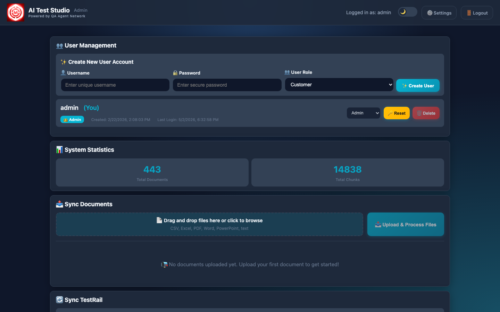
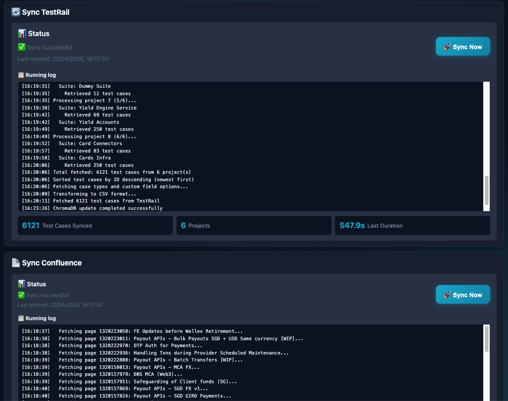
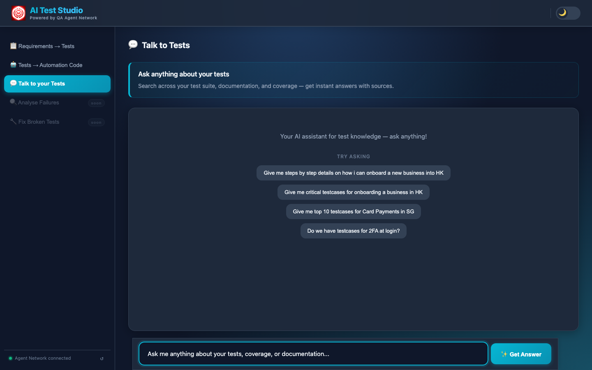
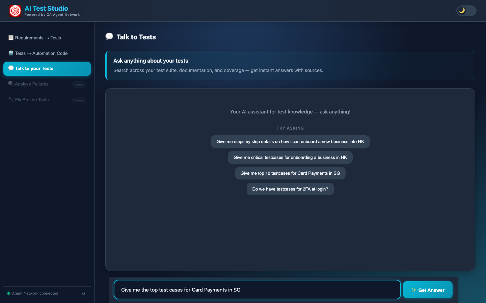
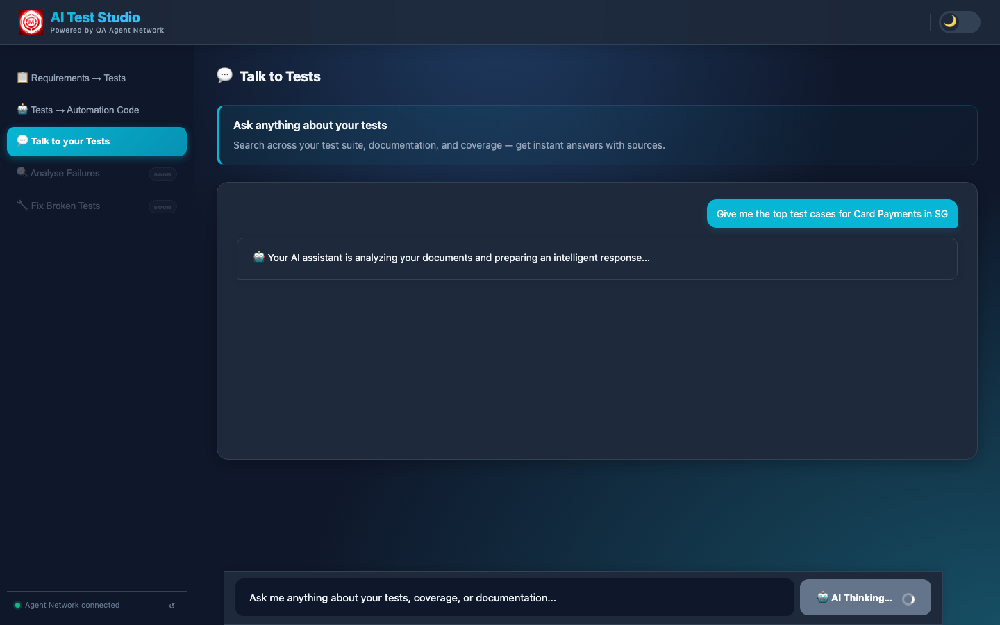
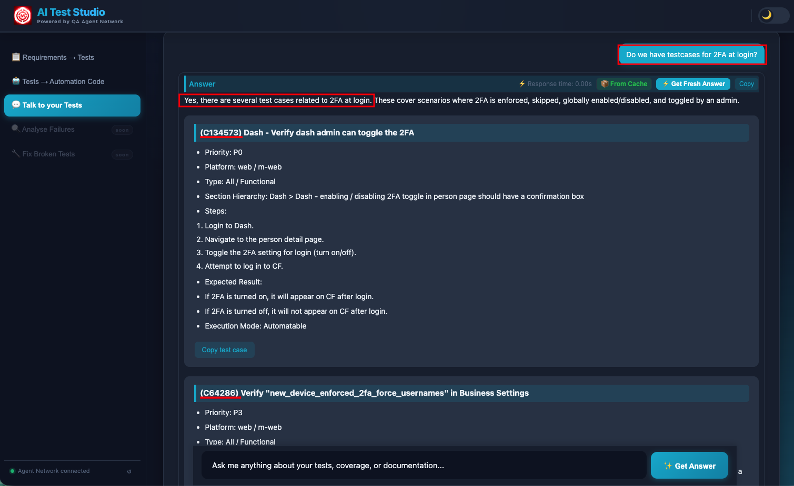

Finding information about test coverage today means opening TestRail to search cases, digging through Confluence for spec docs, asking teammates who might remember. It's slow and inconsistent. The RAG Chat tab turns your entire QA knowledge base into a single queryable interface — answered in seconds, grounded in your actual documentation.
The Problem It Solves
Ask any QA engineer what happens when someone on the team asks "do we have test coverage for the 2FA login flow?" The answer is a combination of: opening TestRail and typing in the search box, opening Confluence and hunting through nested pages, pinging someone in Slack who might know, and hoping the answer is right. This is not a knowledge problem — the documentation exists. It's an access problem. The information is scattered across three systems and a human's memory.
The Talk to Tests chat interface solves this by indexing all of that documentation — TestRail cases, Confluence pages, uploaded PDFs and Word docs — into a vector database, and letting engineers query all of it through a single conversational interface. Ask in plain English. Get an answer in seconds. Traceable to specific documents.
What Powers It: The Knowledge Base

The knowledge base is built from three sources synced via the Admin panel:
- TestRail sync — every test case across all connected projects is pulled, chunked by section, and embedded into ChromaDB. When you ask "what test cases do we have for card payments?", the system retrieves the actual TestRail cases.
- Confluence sync — product spec pages, runbooks, onboarding guides, and design docs are all indexed. The AI can reference your actual product documentation when answering.
- Document uploads — PDFs, Word docs, Excel sheets, PowerPoints, plain text. Anything you upload via the Admin panel is chunked and embedded automatically.

All embeddings are stored locally in ChromaDB — no test case content or documentation leaves your infrastructure when using a local LLM. The vector database is persistent across restarts and only updated when you trigger a sync or upload a new document.
How RAG Works Here
RAG — Retrieval-Augmented Generation — means the LLM generates its answer from retrieved context, not from its training data. Here's the retrieval pipeline for every question asked in Talk to Tests:
The engineer's question is converted into a vector embedding using the same model used during document indexing. The question and the documents now live in the same vector space, making similarity comparison possible.
ChromaDB performs a cosine similarity search across all stored chunks, returning the top-K most relevant pieces. These chunks might come from TestRail cases, Confluence pages, or uploaded documents — all searched simultaneously.
The retrieved chunks are injected into the LLM prompt as context, along with the original question. The prompt instructs the model to answer only from the provided context and to say "I don't know" if the answer isn't there.
The LLM generates an answer strictly from the provided context, not from general training knowledge. This is what prevents hallucination — the answer is always traceable to a specific document or TestRail case. If the information isn't in your knowledge base, the model says so.
Why "grounded" matters
A general-purpose LLM asked "what are our card payment test cases?" will either refuse or hallucinate plausible-sounding test cases that don't exist. A RAG system asked the same question retrieves the actual cases from your TestRail instance and quotes them directly. The difference between a useful answer and a dangerous one is grounding.
Using the Chat

The chat interface opens in the Customer portal under the "Talk to Tests" tab. Engineers can ask questions in plain English — the system handles the retrieval and generation. Common use cases:
- Coverage discovery: "Do we have test cases for 2FA at login?"
- Onboarding: "Give me step-by-step details on how to onboard a new HK business"
- Scenario lookup: "What are the critical test cases for Card Payments in SG?"
- Gap finding: "What edge cases are missing from our payment flow tests?"


Responses stream back token by token, so engineers see the answer forming in real time rather than waiting for a complete response. The streaming is handled via Server-Sent Events on the Flask backend.

The complete Talk to Tests response — the AI surfaces the relevant test cases and documentation, grounded in the indexed TestRail and Confluence data.
Multi-LLM Support
The chat backend supports three LLM providers, configurable via environment variable. ChromaDB remains local regardless of which LLM is chosen — only the generation step changes.
Switch provider with LLM_PROVIDER=openai|google|ollama in your environment config. When using Ollama, the LLM runs on your machine — no data leaves your network at any stage of the pipeline. This is important for teams with strict data residency requirements.
On-premise option
Teams that cannot send test case content or product documentation to cloud LLMs can run the full stack locally: Ollama for generation, ChromaDB for vector storage, Flask for the API. Zero data egress. The trade-off is response quality — GPT-4 and Gemini produce notably more coherent answers for complex multi-document questions.
You've seen the full system
Five features, three repositories, one continuous loop — generation, authoring, triaging, healing, and now the knowledge layer that ties it all together. Read the full architecture overview or explore another feature.